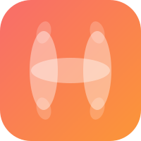
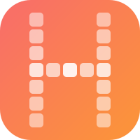
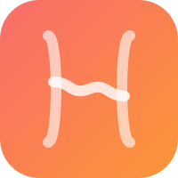
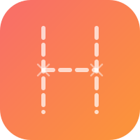

La lettre H — 12 facons
Minimaliste, creatif, toujours reconnaissable
Chaque concept suggere la lettre H avec une technique differente. Le H n'est jamais litteral, il emerge du design.
Structurel — le H est forme par des elements
01
H Dots
Points de tailles variees places sur la structure du H. Le plus gros dot marque le croisement.
pointillisme
02
H Wave
Deux piliers relies par une courbe S fluide. Le H respire, le lien est vivant.
organique
03

H Petals
Trois ellipses (2 verticales + 1 horizontale) forment un H floral avec des accents aux extremites.
petales
04

H Pixel
Grille 5x7 de tuiles arrondies. Retro-moderne, ludique, lisible a toutes tailles.
pixel art
05

H Ribbon
Piliers courbes + barre tordue en ruban. Mouvement, elegance, lien torsade.
ruban
Emergent — le H apparait par contraste ou densite
06
H Negative
Le H est l'espace vide decoupe dans un rectangle blanc. Espace negatif pur.
negative space
07
H Scatter
Nuage de particules dont la densite dessine le H. L'ordre emerge du chaos.
densite
08
H Lines
Lignes horizontales uniformes qui s'illuminent au passage du H. Masque + luminosite.
scanlines
09
H Bokeh
Halos lumineux flous qui convergent vers la forme du H. Chaleur de soiree.
bokeh
Deconstructif — le H est fragmente ou reinterprete
10
H Split
Deux L inverses qui se font face. Le H est implicite dans l'espace entre eux.
deconstruction
11

H Stitch
Traits pointilles + croix aux joints. Brode, artisanal, fait-main.
broderie
12
H Circles
4 cercles colores + 1 ellipse dore. Le H nait de la superposition.
intersection